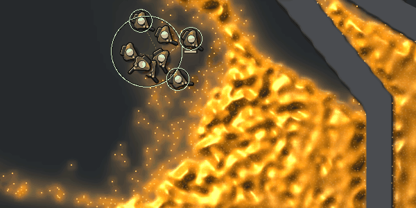
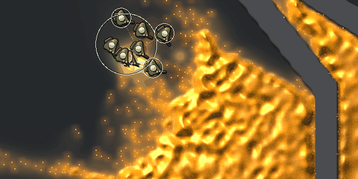
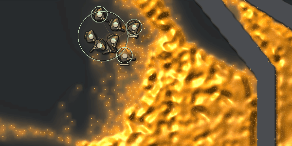
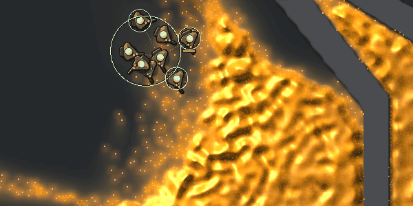

<title>Squad Guns</title>
<meta name="claude:viewport-fit-sides" content="cover">
<link rel="stylesheet" href="https://fonts.googleapis.com/css2?family=Space+Grotesk:wght@500;700&family=Inter:wght@400;600&display=swap">
<style>
/* Layout: one column; the four kinds as a stat table, then each kind's film with its counts. */
:root { --bg:#f2f3ef; --fg:#1c2023; --muted:#5b6366; --panel:#ffffff; --line:#d7d9d1; --accent:#5d7f3a;
  --display:"Space Grotesk",system-ui,sans-serif; --body:"Inter",system-ui,sans-serif; }
@media (prefers-color-scheme: dark) { :root:not([data-theme="light"]) { --bg:#121516; --fg:#e6e9e5; --muted:#99a2a2; --panel:#1a1e20; --line:#2b3134; --accent:#a3c97a; color-scheme:dark } }
:root[data-theme="dark"] { --bg:#121516; --fg:#e6e9e5; --muted:#99a2a2; --panel:#1a1e20; --line:#2b3134; --accent:#a3c97a; color-scheme:dark }
body { background:var(--bg); color:var(--fg); font-family:var(--body); line-height:1.55; }
main { max-width:860px; margin:0 auto; padding-block:32px 48px; padding-left:max(16px, env(safe-area-inset-left, 0px)); padding-right:max(16px, env(safe-area-inset-right, 0px)); display:grid; gap:28px; }
h1, h2 { font-family:var(--display); text-wrap:balance; margin:0; }
h1 { font-size:2rem; } h2 { font-size:1.25rem; }
p { margin:0; max-width:65ch; }
.muted { color:var(--muted); }
section { display:grid; gap:12px; min-width:0; }
figure { margin:0; background:var(--panel); border:1px solid var(--line); border-radius:6px; overflow:hidden; }
figure img { display:block; width:100%; }
figcaption { padding:12px 14px; display:flex; flex-wrap:wrap; gap:6px 14px; align-items:baseline; }
.tag { font-family:var(--display); font-weight:700; color:var(--accent); }
.counts { font-variant-numeric:tabular-nums; color:var(--muted); }
.wrap { overflow-x:auto; }
table { border-collapse:collapse; font-variant-numeric:tabular-nums; width:100%; }
th, td { text-align:left; padding:6px 10px; border-bottom:1px solid var(--line); vertical-align:top; }
th { font-weight:600; }
td.num, th.num { text-align:right; }
</style>
<main>
  <header style="display:grid;gap:8px">
    <h1>Squad Guns</h1>
    <p class="muted">Larder World, 14 November. Each squad now owns a gun. A gun is a set of numbers rolled around one of four kinds: how far it shoots, how often, how wide, how many bullets each shot, and the budget and slots for its cards. Films are from the Fork map, seed 1, with eight soldiers holding the front from 0:19 to 0:22 with plain bullets.</p>
  </header>

  <section>
    <h2>The four kinds, as an average gun</h2>
    <div class="wrap"><table>
      <thead><tr><th>Kind</th><th class="num">Range</th><th class="num">Shots a second</th><th class="num">Spread</th><th class="num">Bullets a shot</th><th class="num">Budget</th><th class="num">Slots</th></tr></thead>
      <tbody>
        <tr><td>Rifle</td><td class="num">24</td><td class="num">1.0</td><td class="num">0</td><td class="num">1</td><td class="num">10</td><td class="num">4</td></tr>
        <tr><td>Carbine</td><td class="num">15</td><td class="num">2.2</td><td class="num">1.5</td><td class="num">1</td><td class="num">8</td><td class="num">5</td></tr>
        <tr><td>Long gun</td><td class="num">40</td><td class="num">0.5</td><td class="num">0</td><td class="num">1</td><td class="num">12</td><td class="num">3</td></tr>
        <tr><td>Scattergun</td><td class="num">13</td><td class="num">0.6</td><td class="num">5</td><td class="num">2 to 6</td><td class="num">9</td><td class="num">3</td></tr>
      </tbody>
    </table></div>
    <p class="muted">Range and spread are in dish cells. The rifle is the gun every soldier had until now. A squad that isn't given a gun still fires it, so the campaign plays as before.</p>
  </section>

  <section>
    <h2>How a gun is rolled</h2>
    <p>Every number is drawn around its kind's average, so a gun is as likely to be 10% better as 10% worse, and now and then it's off by a fifth or more. One gun in twelve is lucky, and every one of its numbers lands on the good side. Guns found on deeper planets roll bigger budgets (12% more each planet, up to 2.5 times) and better range, rate and accuracy (4% each planet, up to 1.4 times), and they get a sixth slot more often.</p>
    <p class="muted">In the game, Shift+H rolls a test gun for the controlled squad, cycling rifle, carbine, long gun and scattergun. The gun's icon sits by the loadout name, and its tooltip lists the gun's numbers.</p>
  </section>

  <section>
    <h2>The same front, four guns</h2>
    <figure><figcaption><span class="tag">Rifle</span><span class="counts">655 killed · 156 bullets · mould 24,657 (the same as before guns)</span></figcaption></figure>
    <figure><figcaption><span class="tag">Carbine</span><span class="counts">1,059 killed · 254 bullets · mould 24,271</span></figcaption></figure>
    <figure><figcaption><span class="tag">Long gun</span><span class="counts">344 killed · 88 bullets · mould 24,875</span></figcaption></figure>
    <figure><figcaption><span class="tag">Scattergun</span><span class="counts">714 killed · 320 bullets, about 80 shots of 4 · mould 24,591</span></figcaption></figure>
  </section>

  <p class="muted">These counts come from one seed at a close front, so read them as a tuning note. A close front suits the carbine, and the long gun's reach only pays where slime stands far off. Rendered on the cloud's software GPU. Next come bullets with their own rolled damage and multipliers, and each squad carrying its own cards.</p>
</main>
